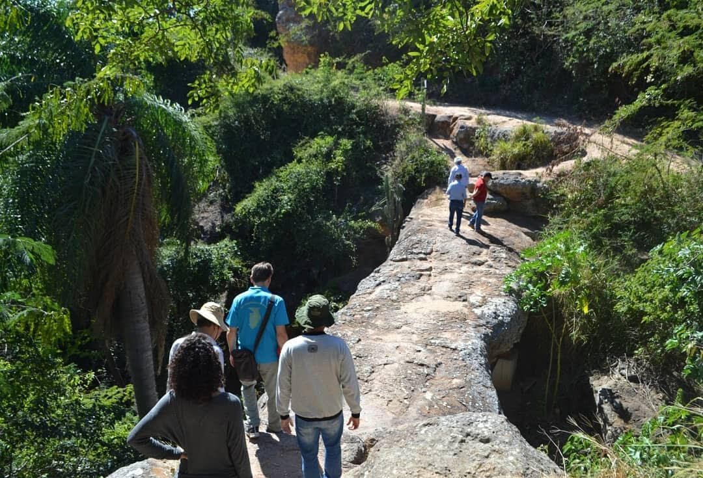
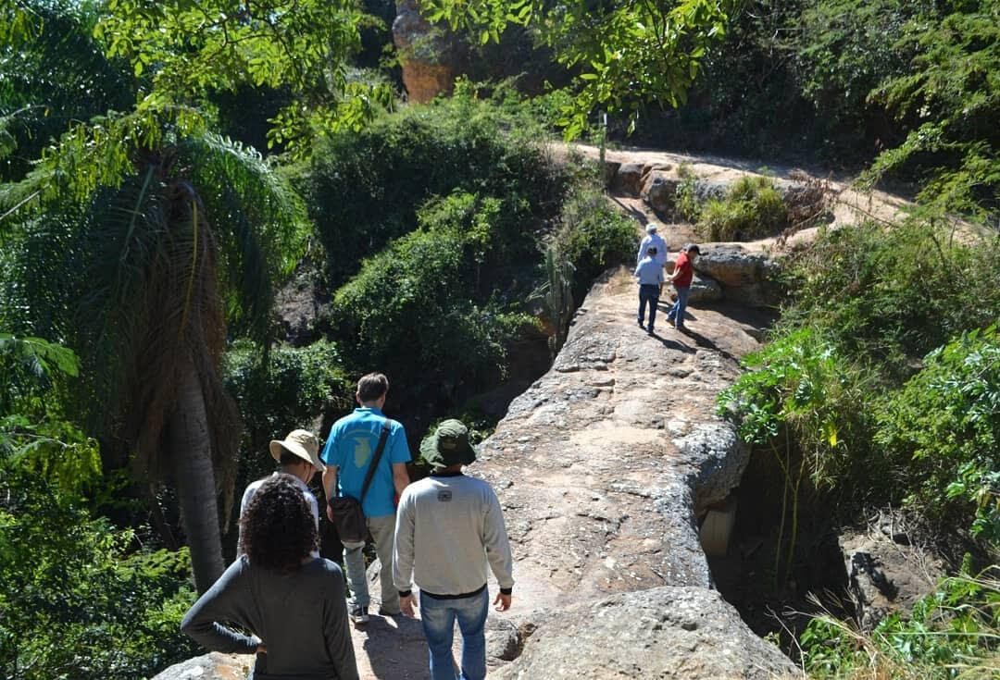
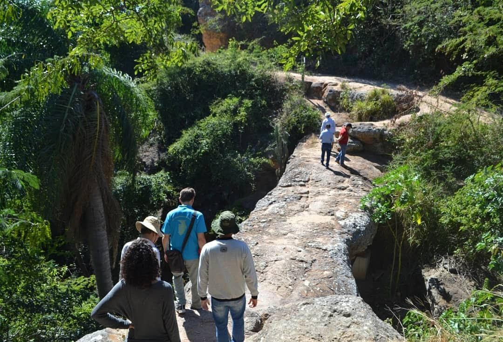

Fotos e Sua Localização
 



O Geopark Araripe está localizada no Crato, Ceará. Para mais detalhes, veja o mapa abaixo:
O Geopark Araripe, localizado no sul do Ceará, é o primeiro geoparque mundial reconhecido pela UNESCO nas Américas e no Brasil. Com uma área de 3.796 km², abrange seis municípios e registra fósseis do período Cretáceo, entre 120 e 100 milhões de anos atrás. A Chapada do Araripe, parte da Bacia do Araripe, guarda evidências da separação do supercontinente Gondwana no Jurássico. A região possui dois tipos principais de solo: latossolo, rico em fósseis, e solo sedimentar, com aquíferos e 348 fontes naturais. A fauna inclui 290 espécies de aves, como o ameaçado soldadinho-do-araripe, e a vegetação combina cerradão, caatinga, cerrado e mata atlântica.

O Geopark Araripe está localizada no Crato, Ceará. Para mais detalhes, veja o mapa abaixo: